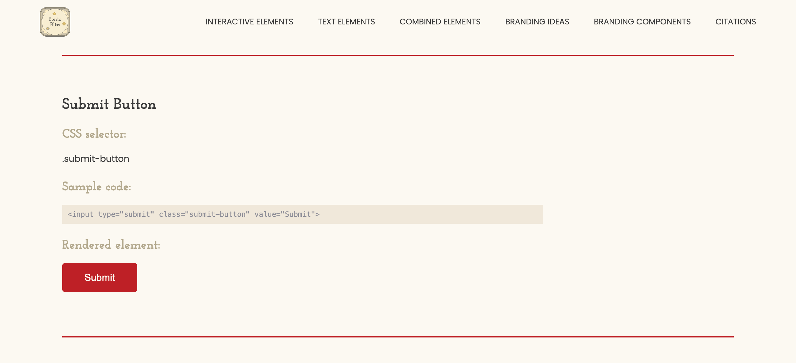
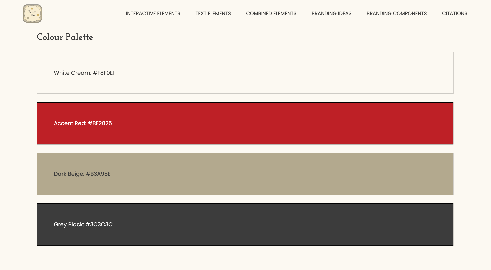
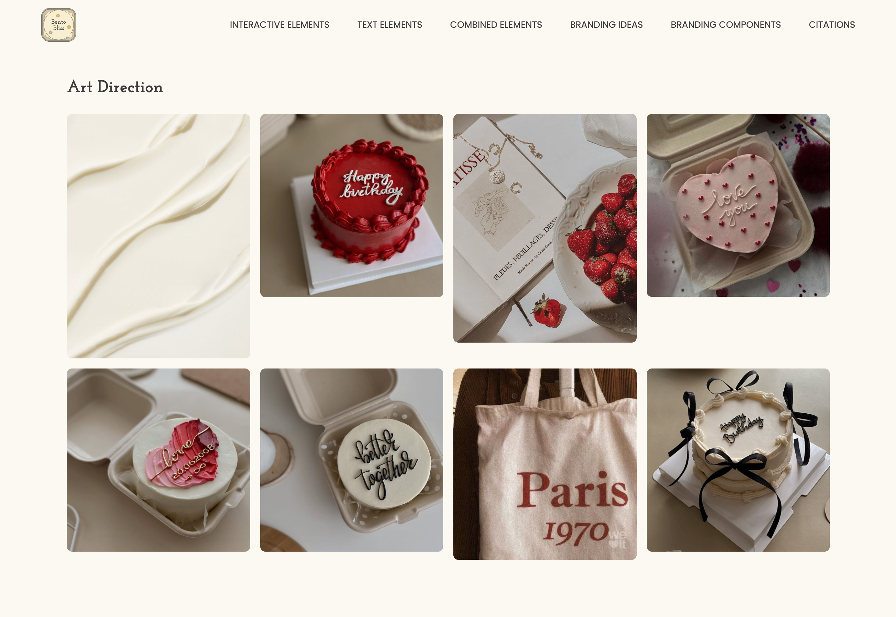
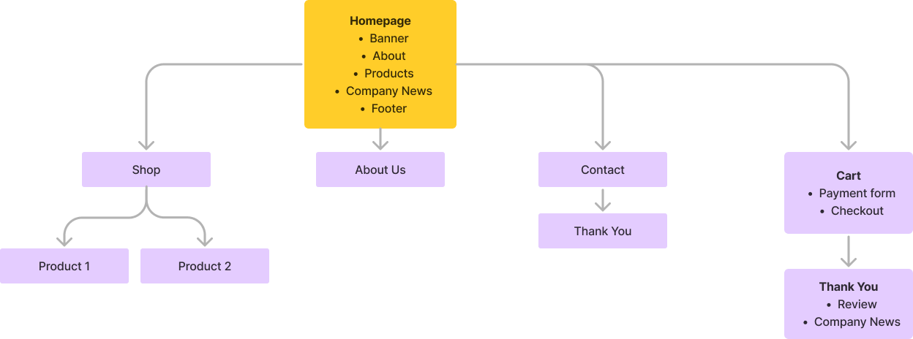
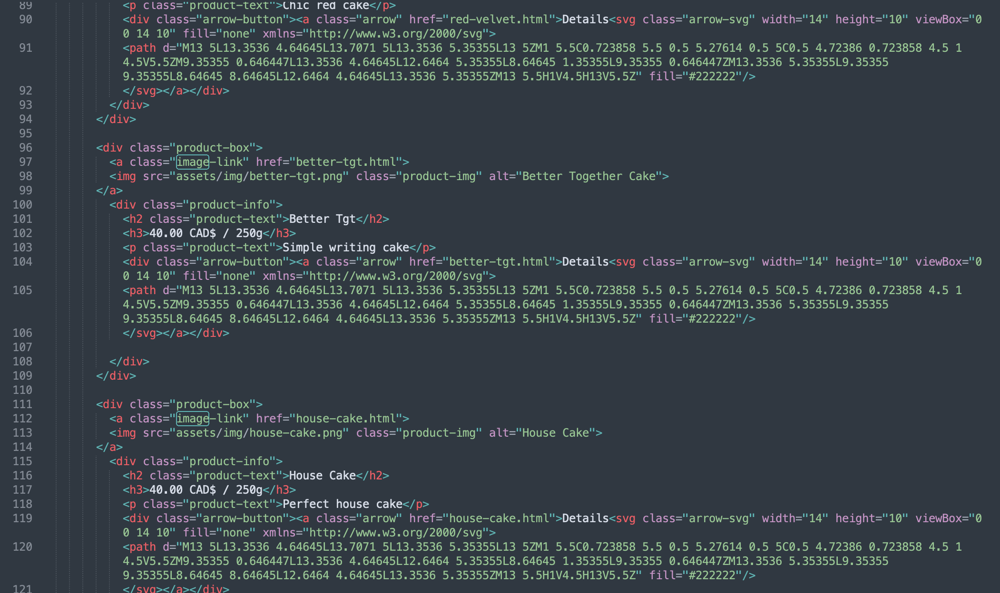
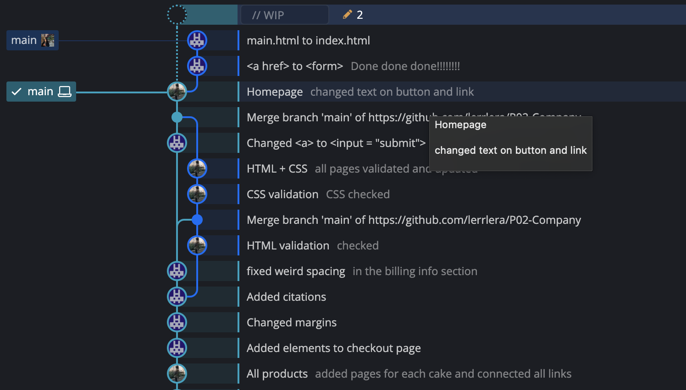

Bento Bliss Website
Web Design & Development
Team
Jae Eun Kim
Timeline
4 Weeks - February 2024
My Role
Interface Design
Development
Tools
HTML
CSS
JavaScript
GitKraken
Sublime
Project Overview
Creating responsive web presence for a bento cake shop
In this academic project, we designed and developed a website for Bento Bliss, a fictional company specializing in bento cakes for special small occasions. Our focus was on creating a visually captivating online platform that reflects the creativity and artistry of Bento Bliss's cake designs. Overall, our project aimed to showcase Bento Bliss as a go-to destination for decadent delights, where every cake is a culinary masterpiece waiting to be discovered.
Company
Bento Bliss
The initial phase of our project involved conceptualizing a fictional company, and I chose to center it around a cake shop specializing in bento or lunchbox cakes tailored for smaller occasions.
Style Guide
Before delving into website design, I developed a comprehensive Style Guide. This guide encompassed interactive elements, text elements, and templates, laying the groundwork for consistency and facilitating easier maintenance throughout the project lifecycle. By establishing clear guidelines, we aimed to streamline the design process and maintain coherence across various design elements, contributing to the success of the project.
Interactive Element: Submit Button
Colour Palette
I opted for warm red, beige, and gold combinations to evoke a sense of richness and indulgence enhancing the online cake experience. These colors were chosen to resonate with the warmth associated with freshly baked goods, creating an inviting atmosphere for visitors to the website.
Art Direction
Wireframes
The process of bringing our website to life began with the creation of low-fidelity wireframes, serving as the foundational blueprint for the layout design. These sketches provided a clear visual guide for the placement of elements and the overall structure of each page.
Homepage
Shop Page
Product Listing
Checkout
Sitemap
Development
Creating website with HTML, CSS and JavaScript
Following the completion of the design phase, our project advanced towards developing a responsive website. My teammate and I decided to split the tasks to ensure active participation in the development process. Together, we developed a responsive website optimized for viewing across various devices, including phones, tablets, and desktops. Leveraging media queries and relative units, we tailored the website's design to adapt dynamically to different screen sizes, ensuring an optimal user experience across all platforms.
Code in Sublime
Challenges
What Did We Struggle With?
Although I had prior experience with HTML, CSS, and JavaScript, I had never applied these skills to develop a complete website before. Therefore, tackling concepts like flexbox and grids presented some challenges. Luckily, with help from our instructor, TA, and online tutorials, I managed to get the hang of it and now I feel a lot more confident in my web development skills.
Collaboration in GitKraken
Takeaways
What Did I Learn?
This project helped enhance my skills in web design and development, particularly in crafting shop websites featuring product catalogues and checkout carts. Additionally, I gained more insight into the significance of style guides for effective collaboration. Overall, I found this project rewarding, deepening my understanding of HTML and CSS significantly.